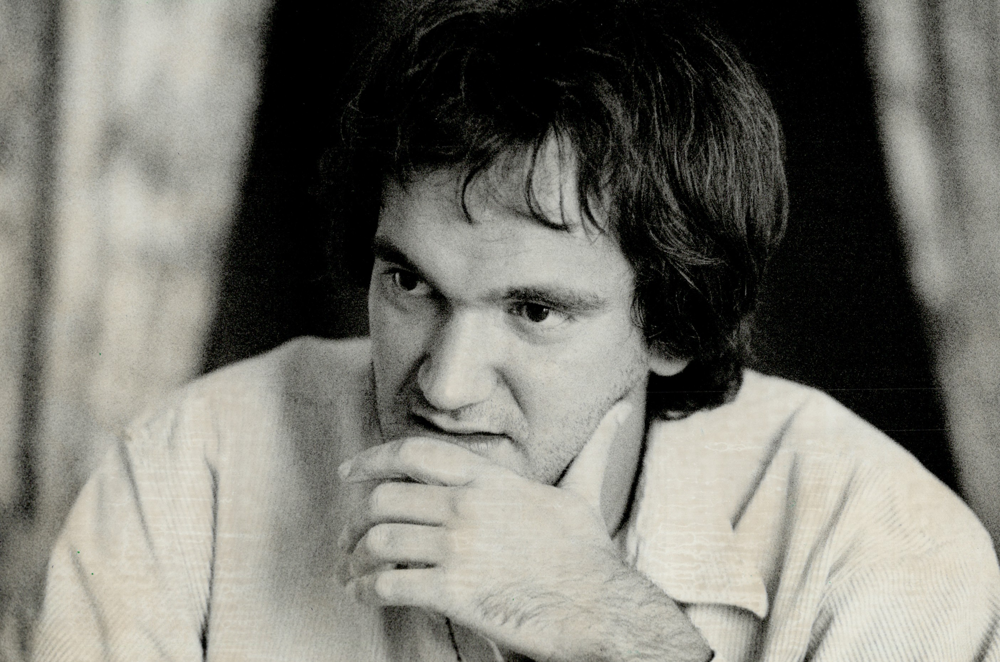
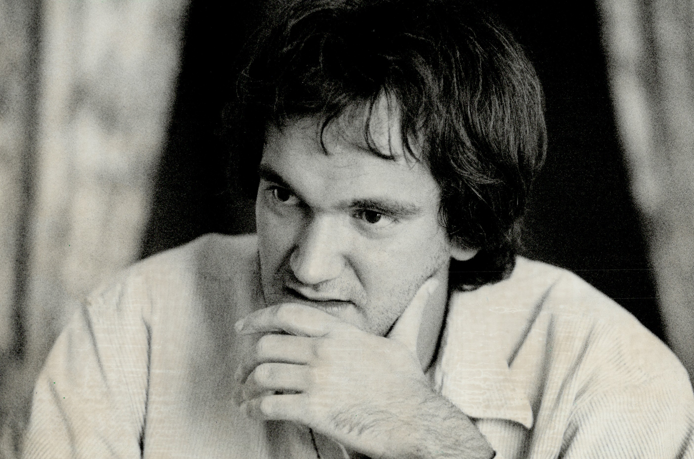
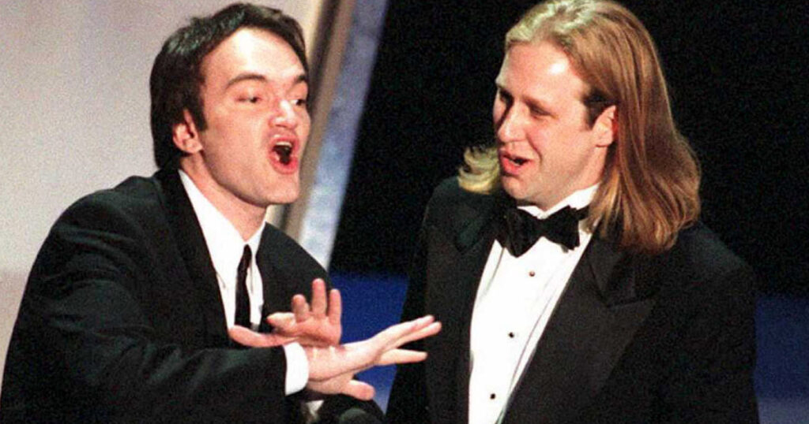
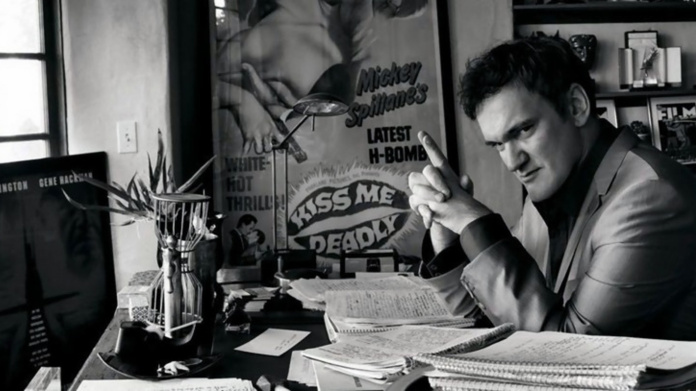
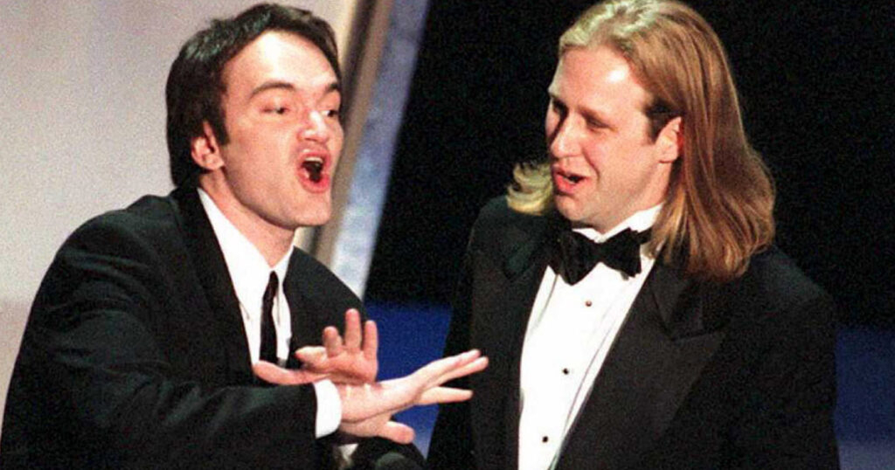
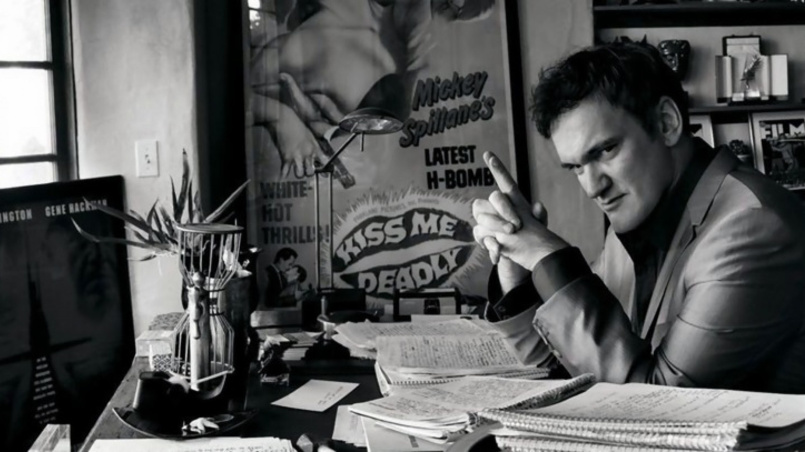
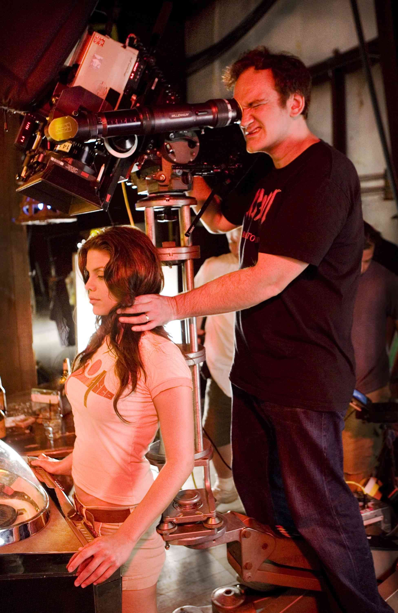
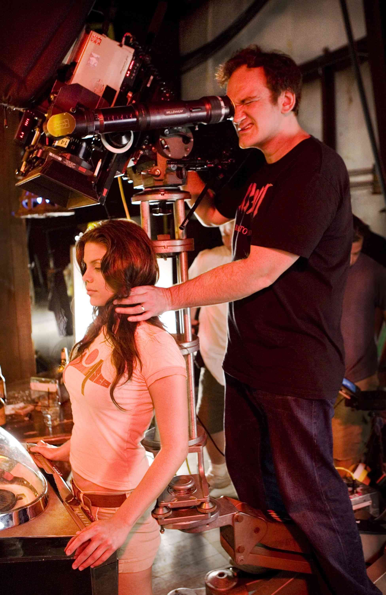

Quentin Jerome Tarantino, (born March 27, 1963, Knoxville, Tennessee,
U.S.), American director and screenwriter. His movies are know for its
own flavor, violence, profanity and he is an one bad motherfucker.
His father, Tony Tarantino, is an Italian-American actor and musician from New York, and his mother, Connie (McHugh), is a nurse from Tennessee. his wife name was Daniella Pick & he have two childern.
Tarantino worked in a video store in California before selling two screenplays that became True Romance (1993) and Oliver Stone Natural Born Killers (1994). In 1992 he made his directing debut with Reservoir Dogs, a violent film about a failed jewelry store robbery. Two years later he established himself as a leading director with Pulp Fiction. The provocative film, won the Palme d’Or at the Cannes film festival, and Tarantino later received an Academy Award for best original screenplay. later he wrote and directed Kill Bill: Vol. 1 (2003) and Kill Bill: Vol. 2 (2004), which centres on a trained assassin (played by Uma Thurman)
His latest film was Once Upon a Time…in Hollywood (2019), The movie received a standing ovation when it premiered at the Cannes film festival. In 2021 Tarantino published a novel based on the dramedy.
Tarantino's films have garnered critical and commercial success, as well as a cult following. Tarantino's works have been subject to controversy, including his depictions of violence and frequent inclusion of racial slurs, and alleged negligence in his handling of stunt scenes in Kill Bill: Volume 2.

 

 





 
